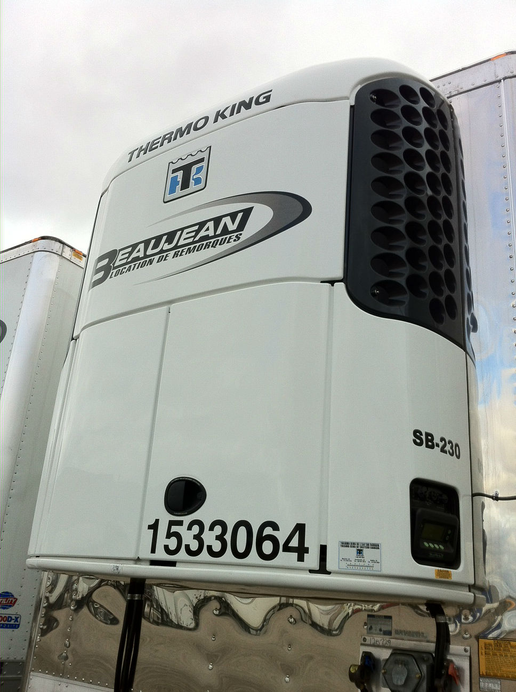

Remorques Réfrigérées 53'
Disponibles avec:- Essieux tandem 
- Essieux tridem
- Portes battantes
- Portes roulantes
- Suspension a air
- Interieur logistique (en option)
- Thermo-King
- Carrier
Remorques sèches 53'
Disponibles avec:- Essieux Tandem
- Essieux Tridem
- Portes battantes
- Portes roulantes
- Suspension a air
- Interieur logistique